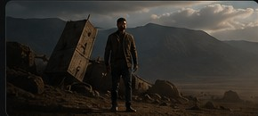
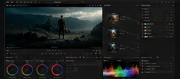
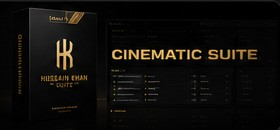

Film
Selected Film Project
صفحة نموذجية لعمل سينمائي، ويمكن لاحقاً إدخال صور الفيلم، الملخص، الجوائز، الفريق والفيديو.
Selected filmmaking, editing, color grading, VFX and sound work.

صفحة نموذجية لعمل سينمائي، ويمكن لاحقاً إدخال صور الفيلم، الملخص، الجوائز، الفريق والفيديو.

نماذج Before / After ومشاريع تلوين مختارة.

برامج وأدوات صنعتها لخدمة صناع المحتوى.